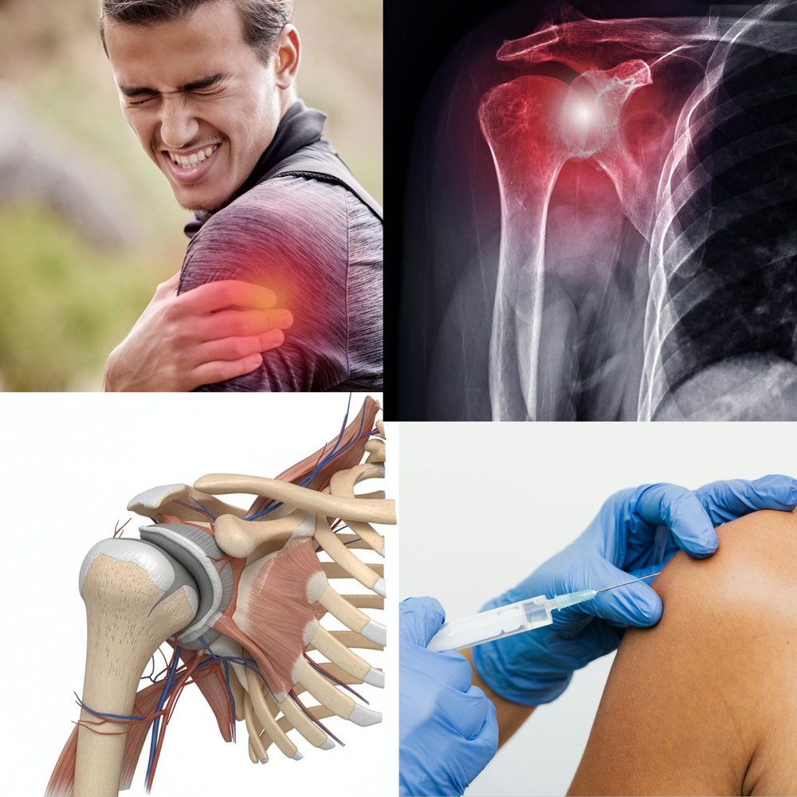

Shoulder Pain When You Lift Your Arm? Rotator Cuff Tendinitis Explained
Do you wince when you reach for a shelf, hang the laundry or fasten your seatbelt? Does your shoulder ache at night, especially when you lie on that side? Were you told it was “just a strained muscle”, yet weeks later it is still there? This could be rotator cuff tendinitis, one of the most common causes of shoulder pain in adults. The good news is that most people recover well without surgery.
What Is the Rotator Cuff?
The rotator cuff is a group of four muscles and their tendons that wrap around the top of your arm bone. They hold the arm bone centred in the shallow shoulder socket and let you lift and rotate your arm. The tendons run through a narrow space under the bony roof of the shoulder, which is why they are easily squeezed or overloaded.
What Is Rotator Cuff Tendinitis?
It means the tendons are irritated and painful. In adults over 40 it is often partly wear and tear of the tendon rather than pure inflammation, so doctors also use the term tendinopathy. In practice the message is the same: a sore tendon that usually settles with the right activity, exercises and time.
The Warning Signs
- A dull ache at the front or side of the shoulder, sometimes spreading down the upper arm.
- Pain when lifting the arm sideways or overhead, often worst in the middle of the movement.
- Night pain, especially when lying on the affected shoulder.
- Difficulty reaching behind your back, for example to fasten a bra or tuck in a shirt.
- Mild weakness or stiffness, usually because pain limits the effort.
What Causes It?
- Repetitive overhead activity: painting, hanging clothes, lifting, swimming, racket sports, gym workouts.
- A sudden increase in activity, such as a weekend of heavy DIY or a new gym programme.
- Age: tendons become less resilient after 40.
- Poor posture, especially a rounded upper back, which narrows the space the tendons pass through.
- Previous shoulder injury or a fall.
- Diabetes and thyroid disorders, which make tendon problems more common and slower to settle.
Is It Really Rotator Cuff Tendinitis? How It Is Diagnosed
Shoulder pain has many causes, including a rotator cuff tear, frozen shoulder, arthritis, a pinched nerve in the neck and, occasionally, the heart. Diagnosis usually combines:
- Your story and an examination, checking movement, strength and specific tests that reproduce the pain.
- X-ray, to look for arthritis, bone spurs or calcium deposits in the tendon.
- Ultrasound or MRI, used when the pain is severe, follows an injury, or has not improved after several weeks, to look for a tear.
A useful clue: in tendinitis, someone else can usually lift your arm fully even if it hurts, whereas in frozen shoulder the joint itself is stiff.
What Happens If It Is Left Untreated?
Ignoring the pain and pushing on can lead to persistent pain, weakness and a stiff shoulder. Over time, an irritated tendon is more likely to fray or tear, and a partial tear can become a larger one.
How Is It Treated?
- Relative rest. Avoid the movements that provoke the pain, but do not immobilise the shoulder completely: a stiff shoulder is a bigger problem than a sore tendon.
- Pain relief. Paracetamol, or a short course of anti-inflammatory tablets or gel if they are safe for you. A cold pack wrapped in a cloth for 15 to 20 minutes can ease a flare.
- Physiotherapy and exercises. This is the cornerstone of treatment. Progressive stretching and strengthening of the rotator cuff and shoulder blade muscles gives the best long-term results, usually over 6 to 12 weeks.
- Corticosteroid injection, as shown in the picture above, for pain that is stopping you from doing your rehabilitation. It can give good short-term relief, but repeated injections may weaken the tendon, so they are used sparingly.
- Surgery is rarely needed, and is reserved for large tears or for cases that fail months of proper treatment.
Habits That Help
- Warm up before overhead or sporting activity, and build up gradually.
- Avoid sleeping on the painful side, and rest the arm on a small pillow.
- Keep everyday items between waist and chest height.
- Improve your posture, especially at your desk.
- Keep up the strengthening exercises after the pain settles: this greatly reduces the risk of it coming back.
When to Seek Medical Help Quickly
- 🔴 Shoulder or arm pain with chest pain, breathlessness or sweating: call SAMU (114) or go to hospital immediately.
- 🔴 Sudden weakness or inability to lift your arm after a fall or injury: this may be a tear.
- 🔴 A hot, red, swollen shoulder, especially with fever: a joint infection must be ruled out urgently.
- 🟡 Numbness or tingling down the arm, or neck pain that shoots into the arm.
- 🟡 Pain that is not improving after 4 to 6 weeks, or that keeps waking you at night.
- 🟡 You have kidney disease, stomach ulcers, heart disease or take blood thinners, as many painkillers may not be safe for you.
The Bottom Line
Rotator cuff tendinitis is common, painful and very treatable. The sooner the shoulder is properly assessed and rehabilitated, the faster you return to your normal activities and the lower the chance of a tear.
If your shoulder pain is lasting, affecting your sleep or limiting your work, do not wait for it to go away on its own. Always consult your doctor before starting or stopping any medicine.
Shoulder pain that will not settle, or keeps waking you at night? Message directly and ask.
Message on WhatsAppThis article is general health information and does not replace a medical consultation. In a medical emergency, call SAMU (114) or go to your nearest hospital.